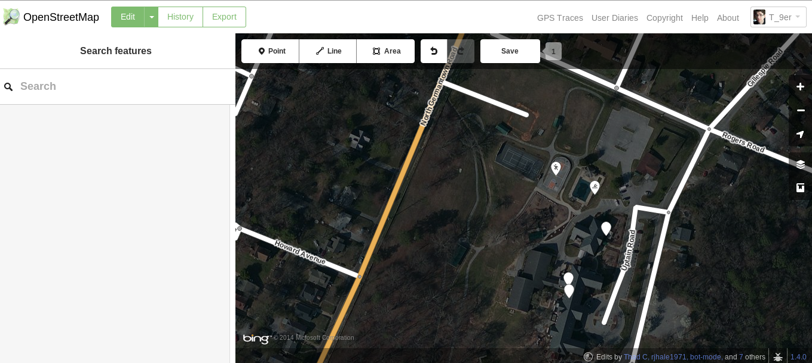
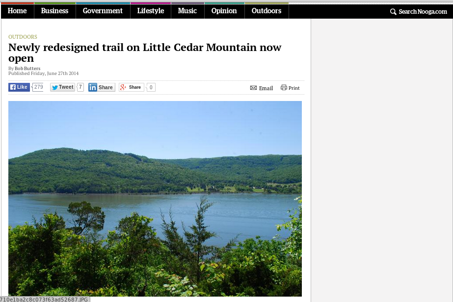
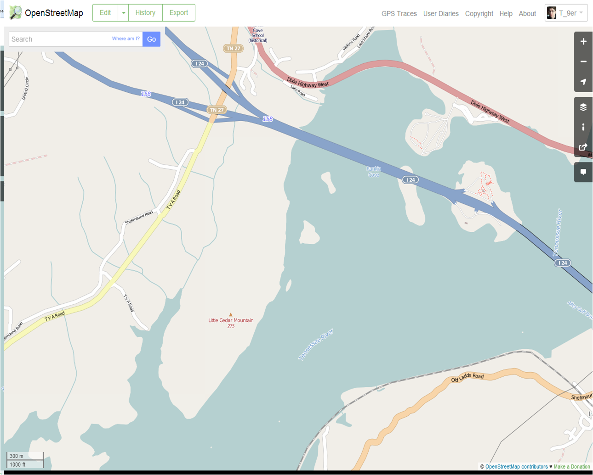
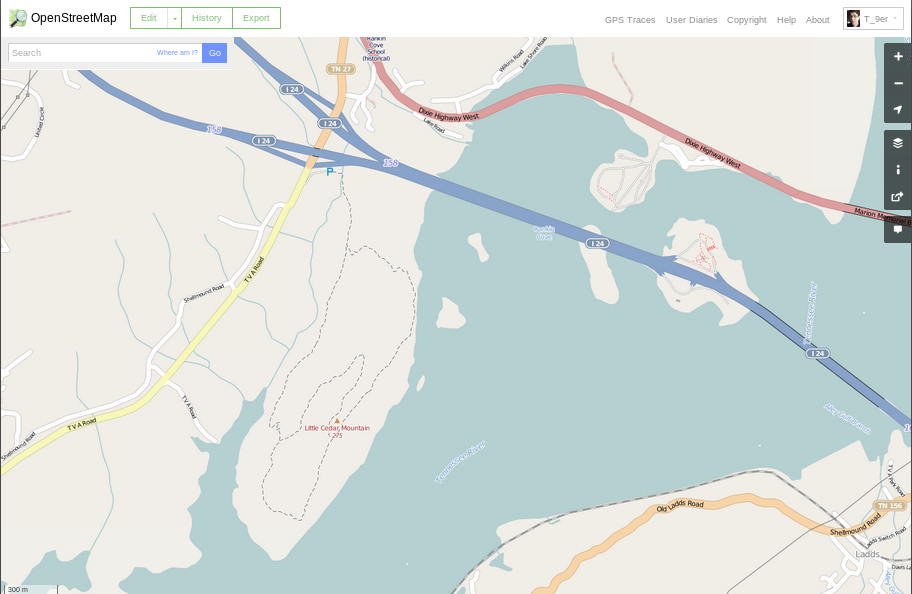

Housekeeping!
You can follow along here:
bit.ly/osm-101. Links are in blue boxes,
green is just emphasis. Change slides w/ arrow keys. You can comment and edit on
github!
What is OpenStreetMap?
Anyone (like YOU!) can edit OSM
And here is the beauty piece, anyone (like YOU!) can have/use the OSM data
How do you know OSM is for you?
Does this bother you?

OMFG make it stop!!!
Do you have to do something about this?

Before
After

So, let's sign up
now!Let's get started!
Two ways to edit OSM: web editor
iD or advanced editor
JOSM
iD: just click edit up in the corner ↖︎
 JOSM
JOSM
Look: layers! ⬈

Look: notes!⬊
data model: nodes / ways / relations

OK! But what should I edit first? Suggestions:
Go to your neighborhood or home town
Trace some buildings
Add some POIs (points of interest)

Get outside!
What not to do:
Main rule of thumb: no copying from Google products!
OSM is licensed under the Open Database License:
ODbLMore on that another time...
Now lets get started doing some mapping!
Presentation made with
big